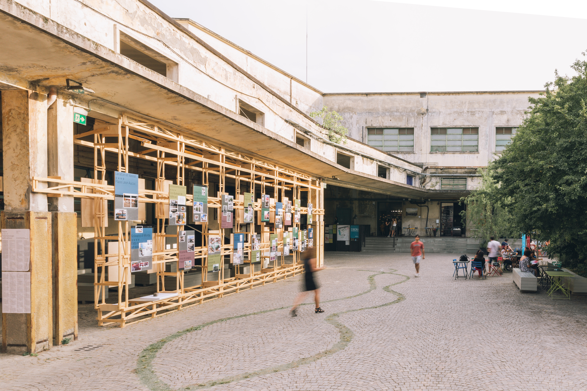

Una incompleta raccolta di superfici urbane contemporanee.
Luogo emblematico dell’alterità, dell’incontro e del confronto pubblico, ma anche della domesticità, della comunità, del raccoglimento. Arena per eccellenza della rappresentanza e della pacifica convivenza democratica, e al contempo spazio simbolico della lotta e della contraddizione sociale. Scenario paradigmatico della libertà di espressione, eppure anche teatro delle manifestazioni più brutali del potere politico e militare. Il più classico tra gli archetipi urbanistici, la piazza rappresenta ancora oggi, nei suoi infiniti paradossi, il terreno malleabile e dinamico sul quale possono germogliare nuove forme del vivere collettivo. Una collezione di piazze. Da quelle più ‘tradizionali’ o classiche, a quelle più sperimentali, ‘tattiche’ o ‘temporanee’, per descrivere un ventaglio di approcci, stili, logiche e strategie. Luoghi accessibili a tutti, senza eccezioni. Spazi sufficientemente definiti da possedere una loro identità, ma abbastanza generici da permettere lo sviluppo di usi inattesi. Un viaggio nelle piazze di oggi, che culleranno le società di domani.
Una mostra a cura di orizzontale
Manifattura Tabacchi, Firenze
dal 9 Giugno al 7 Settembre 2022
Rocca Estense, Lugo *
dal 7 Dicembre 2023 al 31 Marzo 2024
Forte Batteria Siacci, Reggio Calabria *
dal 18 Settembre al 14 Dicembre 2024
Un progetto di VUOTO per Many Possible Cities Festival
co-prodotto da LAMA Impresa Sociale
* con il supporto di ProViaggiArchitettura
Progetto grafico: Atto
Progettare architetture significa, generalmente, dare forma ad un “programma” — una lista ordinata di attività che verranno svolte nello spazio che deve essere ideato. Non è il caso della piazza. Disegnare una piazza significa inevitabilmente confrontarsi con l’assenza di programma o, forse meglio, con la sua assoluta irrilevanza. Non che non sia possibile, e perfino utile, prefigurare usi per il nuovo luogo. Eppure, ciò che determina il successo di una piazza non è mai la capacità del luogo, una volta costruito, di accogliere in modo soddisfacente gli usi previsti, quanto piuttosto la sua attitudine ad accogliere tutti quegli usi imprevisti, le attività che non erano state inizialmente specificate, che emergono in un secondo momento, che appaiono dal nulla, sorprendendoci. Se in tutti gli altri casi la riuscita di un progetto si misura con la sua specificità — vale per gli edifici, ma anche per altre specie di spazi aperti, ad esempio i parchi — nel caso della piazza la misura del successo è, al contrario, data dalla genericità. La piazza, potremmo dire, si progetta come vuoto che accoglie l’inatteso. La mostra trasforma una porzione dello spazio aperto della Manifattura Tabacchi — una zona di limite tra interno ed esterno rappresentato da una tettoia che affaccia sul ‘giardino della ciminiera’ — in una galleria espositiva. Un diaframma leggero in legno, una facciata temporanea, divide l’area coperta del portico dalla zona occupata dal giardino, generando due nuovi spazi, quello più intimo al di sotto della tettoia, e quello esterno, antistante alla facciata, compresso dalla sua presenza e più simile ad una piazza pubblica. Nel far ciò l’installazione interroga lo spazio stesso della Manifattura, ponendo domande sul suo presente e sul suo futuro. Questi luoghi, che negli ultimi anni hanno rivestito un ruolo centrale nella vita urbana di Firenze, saranno nuovamente chiusi al pubblico oppure troveranno la loro strada per arrivare ad essere vere e proprie piazze? L’esposizione raccoglie 40 piazze, progettate e realizzate nel XXI secolo — con l’unica eccezione di Place Léon Aucoc, di qualche anno precedente, inclusa come ‘prologo’. Le piazze sono state selezionate senza pretesa né di dare conto del variegato panorama relativo alla progettazione di spazi aperti urbani contemporanei, né di concentrare l’attenzione su un particolare tipo di approccio. Tutti gli esempi scelti, per una serie svariata e disomogenea di ragioni, hanno un significato speciale per i curatori. Tre dei progetti esposti hanno visto il diretto coinvolgimento dei membri del collettivo — ‘Berlinpleijn’ a Utrecht, ‘Prossima Apertura’ ad Aprilia e ‘Piazze Aperte’ a Milano — e un certo numero di altri è realizzato da progettisti con i quali Orizzontale ha un legame diretto di amicizia. Gli altri sono casi che, per un verso o per l’altro, hanno rappresentato un punto di svolta nella ricerca di Orizzontale, sono stati punti di riferimento per uno o più progetti, ci hanno permesso di espandere la nostra idea di piazza, ci hanno stupito, incuriosito, meravigliato, sorpreso, ospitato, o semplicemente fatto stare bene. Le piazze esposte appartengono a varie specie. Alcune potrebbero a ragione essere definite ‘tradizionali’: per quanto frutto di progetti recenti, per le relazioni con il tessuto costruito in cui sorgono, sia per la struttura degli spazi che offrono, sono pensate come aggiornamento o interpretazione di un modello antico. Altre mettono espressamente in discussione questi stessi modelli proponendo soluzioni innovative o insolite, guardando al futuro. Alcune sono costruite per rimanere a lungo, altre sono effimere o temporanee, realizzate con una durata prestabilita o in modo tentativo, a guisa di esperimenti. Alcune sostituiscono nello stesso luogo altre piazze che le hanno precedute, altre sono realizzate ex novo, laddove prima c’era tutt’altro, un terreno abbandonato o un edificio demolito. Sparse geograficamente su quattro continenti, nel loro insieme danno luogo al resoconto di un viaggio immaginario, ad un atlante parziale e arbitrario della vita pubblica nelle città del pianeta. Il racconto si articola attraverso 40 pannelli, uno per ogni piazza. Nel disegno dei pannelli si incontrano e si mescolano due modelli: quello della ‘tavola’ — il più classico degli strumenti usato di architetti, urbanisti e paesaggisti per promuovere o illustrare le loro idee — e quello del manifesteo, con particolare riferimento alle forme ‘spontanee’ della comunicazione artistica e politica tipica dello spazio pubblico urbano. Abbandonando la tradizionale pretesa della ‘tavola’ di essere completa ed esaustiva, i pannelli vengono pensati privilegiando l’immediatezza della suggestione visiva, rendendo possibile a tutti seguire il racconto di questo viaggio, come se fosse un album di istantanee. I 40 pannelli, diventando essi stessi superfici sulle quali scrivere e riscrivere, vengono infatti completati con l’apposizione di immagini in piccolo formato, che contrapponendo al rigore delle grafiche stampate sul fondo metallico la vitalità del gesto impreciso e rapido dell’attacchinaggio richiamano e alludono alla molteplicità di strati di significato che caratterizza ogni spazio urbano, e più di tutti la piazza.
La mostra "Piazze" è anche un libro!
→ VUOTO 5 // Piazze Fenomenologie dell'inatteso
vuoto è un progetto di orizzontale + atto // privacy policy